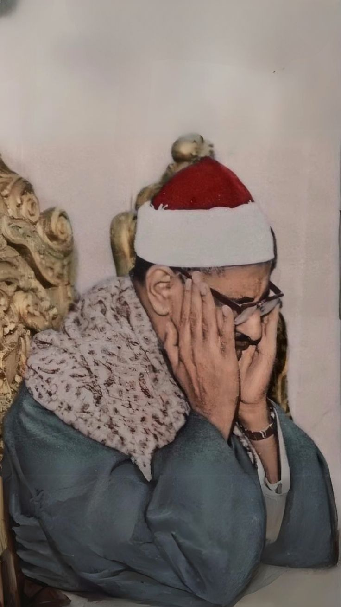

عربي مسلم | Arab Muslim
أذكار
الصلاة
رمضان
العيد
المصحف
⏰ الصلاة القادمة
صلاة:
جاري التحميل...
--:--:--
محمد صديق المنشاوي

المنشاوي ( مجود )
ياسر الدوسري
محمود حصري
احمد النفيس
عبدالباسط عبدالصمد
ماهر المعيقلي
مشاري راشد العفاسي
ناصر القطامي
أحمد العجم
سعد الغامدي
فارس عباد
خالد الجليل
حسن صالح
بندر بليلة
سعود الشريم
عبدالرحمن السديس
عبدالرحمن العوسي
محمد أيوب
محمد جبريل
فيصل الهاجري